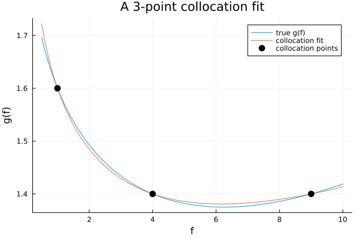
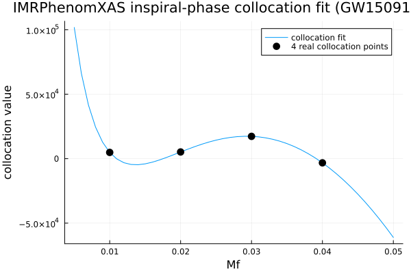

Collocation-Point Coefficient Fitting
Every phase/amplitude "coefficient" you've seen plotted flat-out as a single number in the earlier tutorials (sigma1, beta2, delta3, ...) is itself the output of a small fit: a low-order polynomial made to pass exactly through a handful of collocation points — values of the true phase/amplitude that are considered trustworthy (from a PN expansion, an NR fit, or a boundary/continuity condition) at a few specific frequencies. IMRPhenomXAS/IMRPhenomXHM do this throughout instead of using closed-form-only coefficients the way IMRPhenomD does — this tutorial builds the technique from scratch, then shows exactly where it lives in this package's own source.
This is the same approach ripple (github.com/tedwards2412/ripple, the JAX waveform library Jim's parameter estimation is built on) uses via jnp.linalg.solve — GravitationalWaveforms.jl's own IMRPhenomXAS port says as much directly in its docstring. Nothing below is specific to this package; it's the general method, worth understanding on its own.
using GravitationalWaveforms, Plots
gr()Plots.GRBackend()The idea, from scratch
Suppose you trust the value of some function $g(f)$ at $N$ specific frequencies $f_1, \dots, f_N$ (from a PN series, a numerical-relativity fit, whatever), but you don't have — or don't want — its full closed form. Pick $N$ basis functions (below: powers of $f^{1/3}$, the natural inspiral expansion variable; IMRPhenomXAS itself uses the same choice for its inspiral phase, see below) and solve for the $N$ coefficients that make the resulting combination match every collocation value exactly:
\[c_0 + c_1 f^{1/3} + c_2 f^{2/3} + \cdots = g(f_i) \quad \text{for each collocation point } i\]
This is an $N \times N$ linear system: one row per collocation point, one column per basis function. A tiny, self-contained version (no package internals) makes the idea concrete — 3 collocation points, a quadratic-in-$f^{1/3}$ ansatz:
g_true(f) = 2.0 - 0.5 * sqrt(f) + 0.1 * f # stand-in "true" function (only used tog_true (generic function with 1 method)generate collocation VALUES below – everything after this line only sees those three numbers, not this formula)
f_colloc = [1.0, 4.0, 9.0]
g_colloc = g_true.(f_colloc)
# Vandermonde-style system in the basis (1, f^(1/3), f^(2/3))
A = [f^(k / 3) for f in f_colloc, k in 0:2]
c = A \ g_colloc # c[1] + c[2]*f^(1/3) + c[3]*f^(2/3)
fit(f) = c[1] + c[2] * f^(1 / 3) + c[3] * f^(2 / 3)
f_plot = collect(0.5:0.1:10.0)
plot(f_plot, [g_true.(f_plot) fit.(f_plot)]; label=["true g(f)" "collocation fit"],
xlabel="f", ylabel="g(f)", title="A 3-point collocation fit")
scatter!(f_colloc, g_colloc; label="collocation points", markersize=6, color=:black)
The fit matches g_true exactly at the three marked points and interpolates smoothly between them — it doesn't need to know g_true's actual formula, only its value at those points. That's the whole trick; everything below is this same linear solve at larger N, with the collocation values coming from a physically-calibrated table instead of a stand-in formula.
The general N-point solve, and why it's written the way it is
Base.:\ (a BLAS/LAPACK-backed dense solve) is the obvious tool for the A \ g_colloc step above, and is exactly what's used there. But inside a waveform kernel this fit runs on every walker, every gradient evaluation — and GravitationalWaveforms.jl's own kernels need to differentiate through it with Enzyme.jl, often inside a GPU KernelAbstractions.jl kernel where BLAS/LAPACK calls aren't available at all. IMRPhenomXAS.jl solves this with a small, purpose-built generic solver instead of \: GravitationalWaveforms._xas_linsolve/GravitationalWaveforms._xas_det, a pure, non-mutating determinant/Cramer's-rule solver over fixed-size tuples (NTuple{N,NTuple{N,T}}), sized N=4 or N=5 throughout this package. No arrays, no mutation, no library calls — plain scalar arithmetic all the way down, which is what makes it safe to differentiate and safe to run on a GPU thread. (The determinant/Cramer's-rule approach only makes sense at these small, fixed N; nobody would use it for a general dense solve.)
A4 = ((1.0, 1.0, 1.0, 1.0),
(1.0, 2.0, 4.0, 8.0),
(1.0, 3.0, 9.0, 27.0),
(1.0, 4.0, 16.0, 64.0))
b4 = (1.0, 2.0, 3.0, 5.0)
c4 = GravitationalWaveforms._xas_linsolve(A4, b4)
println("_xas_linsolve: ", c4)
A4_mat = [A4[i][k] for i in 1:4, k in 1:4]
println("Base \\\\ (cross-check): ", A4_mat \ collect(b4))_xas_linsolve: (-1.0000000000000007, 2.833333333333334, -0.9999999999999999, 0.16666666666666663)
Base \\ (cross-check): [-1.0000000000000004, 2.8333333333333335, -0.9999999999999998, 0.16666666666666663]Where this actually lives in IMRPhenomXAS
_xas_phi_coeffs (the function behind Phi(IMRPhenomXAS(), ...)) uses exactly this pattern to build its inspiral-phase pseudo-PN coefficients (sigma1..4) from 4 collocation points in the basis $(1,\, f^{1/3},\, f^{2/3},\, f)$ — literally the same shape as the toy example above, just with real collocation values instead of a stand-in formula. Those values themselves come from GravitationalWaveforms.PhenomXAS_phase_coeff_table — a NTuple{13, NTuple{49, Float64}} of NR/PN-calibrated fit coefficients (one row per collocation point across the inspiral/ intermediate/ringdown regions, 49 numbers per row covering the no-spin/equal-spin/unequal-spin pieces of that point's own (eta, chi)-dependence) — combined into an actual collocation VALUE at given (eta, chi1, chi2) by GravitationalWaveforms._xas_phase_CV.
Reconstruct that real sigma1 at a GW150914-like point directly, using the package's own internals (this is exactly what happens inside every Phi(IMRPhenomXAS(), ...) call — spelled out here instead of hidden inside one function):
m1, m2 = 36.0, 29.0
mc = (m1 * m2)^(3 / 5) / (m1 + m2)^(1 / 5)
eta = (m1 * m2) / (m1 + m2)^2
chi1, chi2 = 0.2, -0.1
Seta = eta < 0.25 ? sqrt(1.0 - 4.0 * eta) : 0.0
chi_s, chi_a = 0.5 * (chi1 + chi2), 0.5 * (chi1 - chi2)
S = chi_s * (1.0 - eta * 76.0 / 113.0) + Seta * chi_a # the aligned-spin combination this0.057844268733308876table's fits are parametrized by
chia = chi1 - chi2
phase_table = GravitationalWaveforms.PhenomXAS_phase_coeff_table
CV = [GravitationalWaveforms._xas_phase_CV(phase_table[i], eta, S, chia, Seta) for i in 1:4]
println("the 4 real inspiral collocation VALUES at this (eta, chi1, chi2): ", CV)
# Same 4-point solve as the toy example, in the same (1, f^(1/3), f^(2/3), f) basis --
# GravitationalWaveforms.jl uses a shifted/rescaled frequency window internally; this illustrates the
# SHAPE of the fit, not the package's exact internal frequency normalization.
f_cp = [0.01, 0.02, 0.03, 0.04]
A_cp = ntuple(i -> (1.0, f_cp[i]^(1 / 3), f_cp[i]^(2 / 3), f_cp[i]), 4)
coeffs = GravitationalWaveforms._xas_linsolve(A_cp, Tuple(CV))
println("fitted (c0, c1, c2, c3): ", coeffs)
fit_cp(f) = coeffs[1] + coeffs[2] * f^(1 / 3) + coeffs[3] * f^(2 / 3) + coeffs[4] * f
f_range = collect(0.005:0.001:0.05)
plot(f_range, fit_cp.(f_range); label="collocation fit", xlabel="Mf", ylabel="collocation value",
title="IMRPhenomXAS inspiral-phase collocation fit (GW150914-like)")
scatter!(f_cp, CV; label="4 real collocation points", markersize=6, color=:black)
Why fit instead of using a closed form directly
IMRPhenomD (the earlier, simpler model in this package) uses closed-form coefficients throughout — no linear solve, no collocation table. IMRPhenomXAS trades that simplicity for accuracy: NR calibration data doesn't come as a closed-form function of (eta, chi1, chi2), it comes as values at specific frequencies for specific physical configurations, fit (separately, offline, by the model's original authors) into the no-spin/equal-spin/unequal-spin table rows _xas_phase_CV combines. The collocation-fit machinery in this tutorial is exactly what turns "value at 4-5 points, for these physical parameters" into "smooth, differentiable closed-form phase," at whatever (eta, chi1, chi2) a sampler asks for — which is also exactly why it has to be Enzyme- and GPU-safe: it runs inside the same hot per-walker loop as everything else in Phi/Ampl.
See the "Frequency-Domain Models" tutorial for IMRPhenomD vs IMRPhenomXAS compared head-to-head, and the test suite for the comparison against lalsimulation.
This page was generated using Literate.jl.